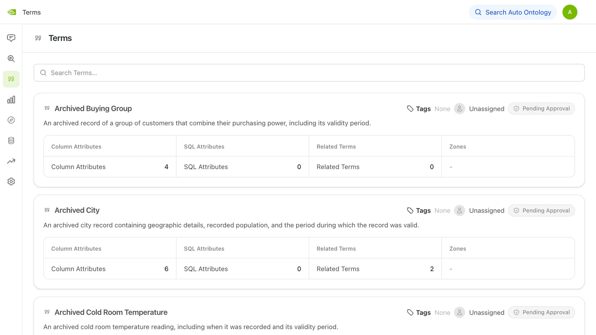
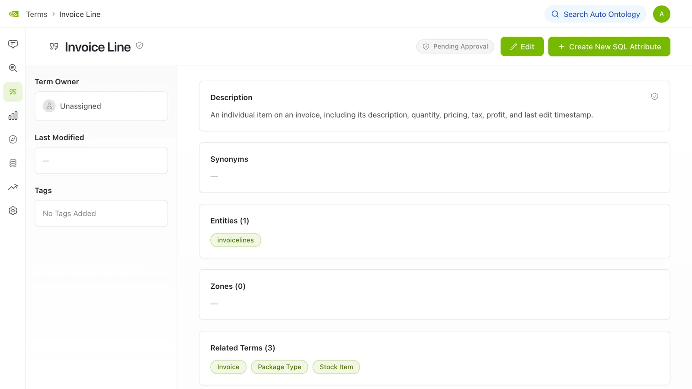
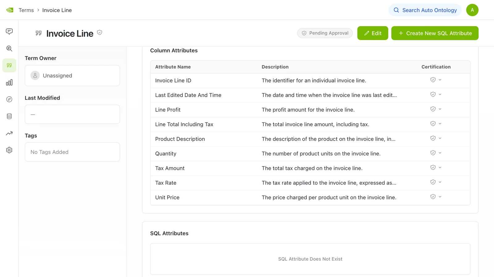
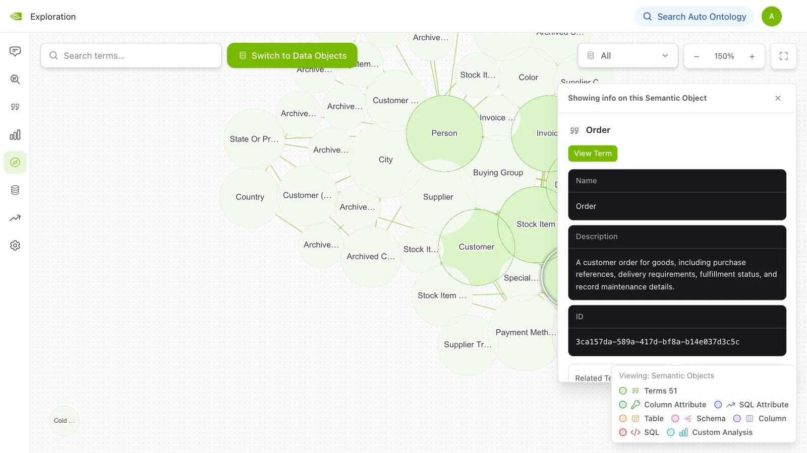
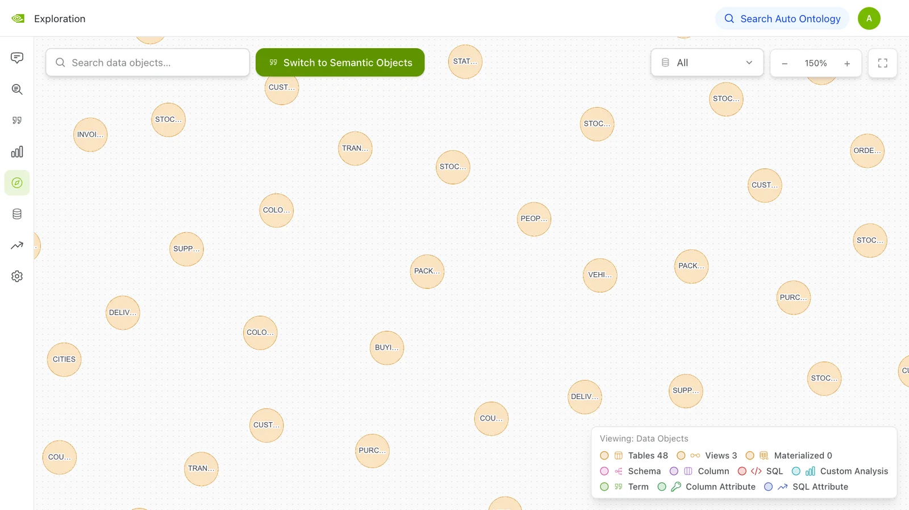
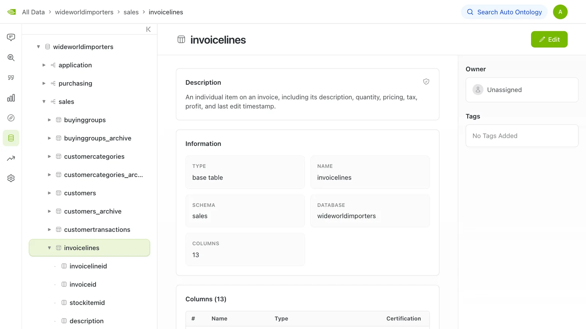
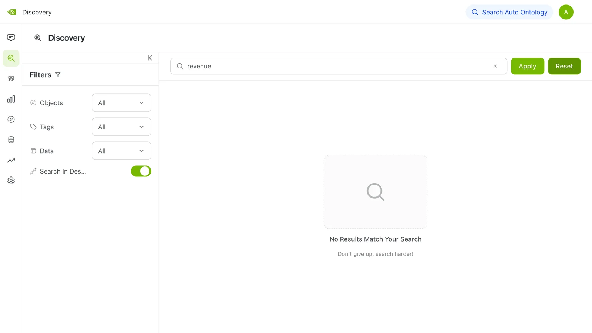

컴파일이 만든 의미 계층을 네 가지 화면에서 살펴봅니다. Terms(용어 목록과 상세), Exploration(의미 그래프와 데이터 그래프), Data(카탈로그), Discovery(검색)입니다. 용어 하나가 어느 표·열을 가리키고 어떤 용어와 연결되는지를 확인하는 것이 검토의 첫걸음입니다.
무엇을 · 왜#
3장의 결과는 숫자로만 보면 「용어 51개, 조인 117개」입니다. 검토하려면 용어마다 이름과 설명이 맞는지, 어떤 열을 담았는지, 어떤 용어와 연결되는지를 하나씩 보아야 합니다. 왼쪽 세로 메뉴에서 각 화면으로 이동합니다.
| 메뉴 | 화면 | 보는 것 |
|---|---|---|
| 따옴표 모양 | Terms | 용어 목록, 용어 상세(설명·동의어·담당자·인증·열 속성·SQL 속성·관련 용어) |
| 나침반 모양 | Exploration | 용어와 관계를 원으로 그린 의미 그래프, 표·열의 데이터 그래프 |
| 데이터베이스 모양 | Data | 데이터베이스 → 스키마 → 표 → 열 카탈로그 |
| 돋보기 모양 | Discovery | 용어·속성·카탈로그를 이름·설명·동의어로 검색 |
따라 하기#
- 용어 목록. Terms를 엽니다. 카드마다 이름·설명과 Tags·담당자(Unassigned)·Pending Approval이 붙고, 아래 칸에 열 속성·SQL 속성·관련 용어 수가 보입니다. 위쪽 검색 칸에
Invoice를 넣으면 이름에 그 글자가 들어간 용어만 남습니다.
용어 목록 — 모든 카드가 Pending Approval - 용어 상세 — Invoice Line. 카드 이름을 누르면 상세 화면이 열립니다. 설명은 「An individual item on an invoice, including its description, quantity, pricing, tax, profit, and last edit timestamp.」입니다. Entities는 이 용어가 가리키는 표(
invoicelines), Related Terms는 조인으로 이어진 용어 셋(Invoice · Package Type · Stock Item)입니다.
Invoice Line 상세 — 설명, 표 invoicelines, 관련 용어 3개 - 열 속성. 아래로 내리면 Column Attributes 9개가 나옵니다. 표의 열 13개 가운데 다른 표를 가리키는 키(
invoiceid·stockitemid·packagetypeid·lasteditedby)는 열 속성이 아니라 관계가 되었습니다. 이름은 사람이 이해하기 쉬운 표현으로 바뀌었습니다. 예를 들어extendedprice는 Line Total Including Tax(세금 포함 줄 합계)입니다. 5장의 Q1에 올바르게 답하려면 바로 이 열을 써야 합니다. | 열 속성 | 원천 열 | |---|---| | Line Total Including Tax |extendedprice| | Tax Amount |taxamount| | Unit Price · Quantity · Tax Rate |unitprice·quantity·taxrate| | Line Profit |lineprofit| 맨 아래 SQL Attributes는 「SQL Attribute Does Not Exist」입니다. 3장에서 본 것처럼 SQL 속성은 하나도 생기지 않았습니다.
Invoice Line의 열 속성 9개 - 의미 그래프. Exploration을 엽니다. 원 하나가 용어 하나이고, 선이 관계입니다. 오른쪽 아래 범례에 「Terms 51」이 보입니다. 원이 촘촘해 잘 안 보이면 왼쪽 위 검색 칸에
Order를 넣고 목록에서 Order를 고릅니다. 그 원이 가운데로 오고 오른쪽 상자에 이름·설명과 「Related Terms: 7 · Attribute Columns: 10 · SQL Attributes: 0」이 나옵니다. README가 그림으로 보여 준 장면과 같은 화면입니다.
의미 그래프에서 Order를 고른 모습 — 오른쪽 정보 상자 - 데이터 그래프. Switch to Data Objects를 누르면 같은 화면이 표·뷰·열 그래프로 바뀝니다. 범례에 「Tables 48 · Views 3」이 나옵니다. 의미 그래프(용어)와 데이터 그래프(물리 표)를 오가며 어떤 용어가 어떤 표에 연결되었는지 확인합니다.

데이터 그래프 — 표 48개와 뷰 3개 - 카탈로그. Data → All Data에서
wideworldimporters→sales→invoicelines를 차례로 엽니다. 표 설명(컴파일 과정에서 작성한 설명, 승인 대기), 형식(base table), 열 13개와 자료형이 나옵니다. 여기의 설명도 Edit으로 고칠 수 있습니다.
카탈로그의 sales.invoicelines — 열 13개 - 검색. Discovery는 용어·열 속성·SQL 속성·카탈로그를 이름·설명·동의어로 한 번에 찾습니다(오른쪽 위 「Search Auto Ontology」 단추도 같은 검색).
revenue를 넣고 Apply를 누르면 「No Results Match Your Search」가 나옵니다. 컴파일이 만든 이름과 설명 어디에도 「revenue」라는 낱말이 없기 때문입니다. 질문에 등장하는 업무 용어이 의미 계층에 없으면, 에이전트는 비슷한 열을 스스로 골라야 합니다. 5장에서 그 결과를 봅니다.
Discovery에서 revenue를 찾은 결과 — 없음
검토할 때 이 화면들을 이렇게 씁니다
- 용어 이름이 업무에서 쓰는 말과 다르면 Edit으로 고치고 동의어를 더합니다. Discovery에서 업무 용어(예: revenue)로 검색하면 누락된 용어를 확인할 수 있습니다.
- 열 속성 이름이 의미를 바꾸지는 않았는지 원천 열과 맞춰 봅니다(
extendedprice= 세금 포함). - 관련 용어가 이상하게 많으면(예: 거의 모든 용어가 Person에 이어짐) 「마지막으로 고친 사람」 조인입니다(3장).
- 맞다고 확인한 이름·설명은 방패 단추로 인증합니다. 인증 표시는 검토가 끝났다는 기록입니다.
막히면#
막히면
- 그래프의 원이 뭉쳐서 고를 수 없음 — 용어 51개가 한 화면에 그려집니다. → 왼쪽 위 검색 칸에서 이름으로 고르거나, 오른쪽 위 + / −로 확대합니다.
- 목록에서 찾는 용어가 안 보임 — 목록은 이름순이고
Archived …17개가 앞에 옵니다. → 위쪽 검색 칸에 이름 일부를 넣습니다.
확인 문제#
1. invoicelines 표의 열은 13개인데 Invoice Line의 열 속성은 왜 9개뿐인가요?
다른 표를 가리키는 키 열(invoiceid·stockitemid·packagetypeid·lasteditedby)은 열 속성이 아니라 다른 용어와의 관계(조인)로 바뀌었기 때문입니다. 그래서 Related Terms에 Invoice·Stock Item·Package Type이 보입니다.
2. 「매출」을 묻는 질문에 쓸 수 있는 Invoice Line의 열 속성은 무엇이고, 무엇이 헷갈릴 수 있나요?
Line Total Including Tax(extendedprice)입니다. 세금을 뺀 값(extendedprice − taxamount)도 매출로 볼 수 있어서, 어느 쪽인지 정의(SQL 속성)가 없으면 모델이 질문마다 다르게 고를 수 있습니다.
다음 장에서는 Chat에 질문 네 개를 묻고 모델이 실제로 낸 답을 봅니다.